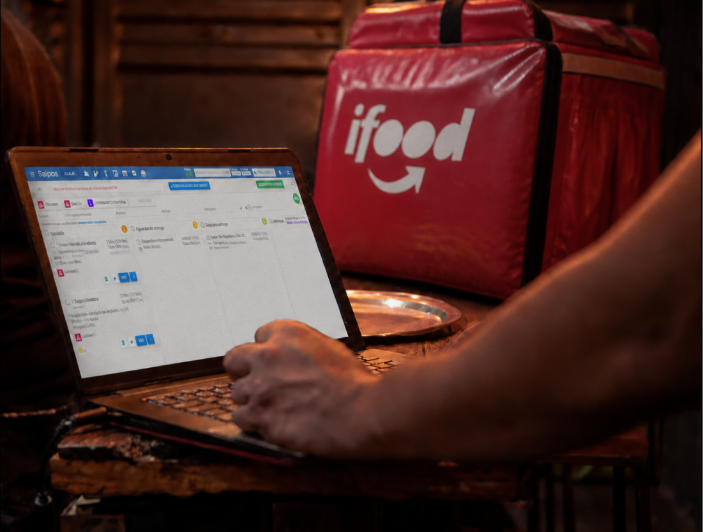
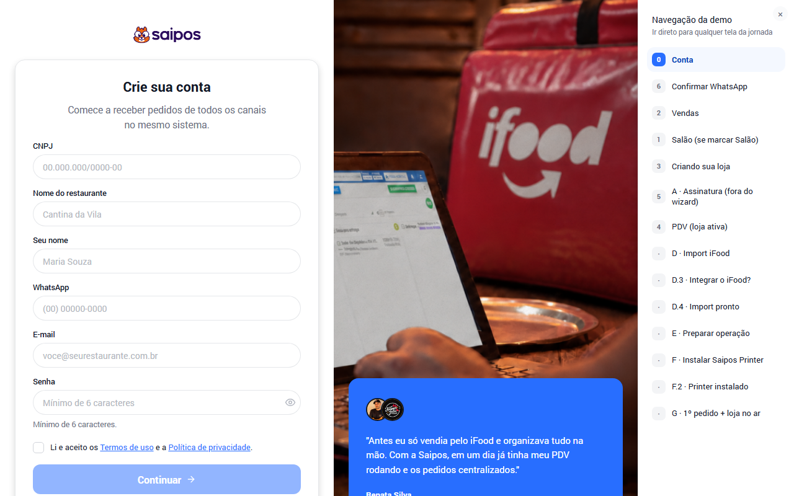
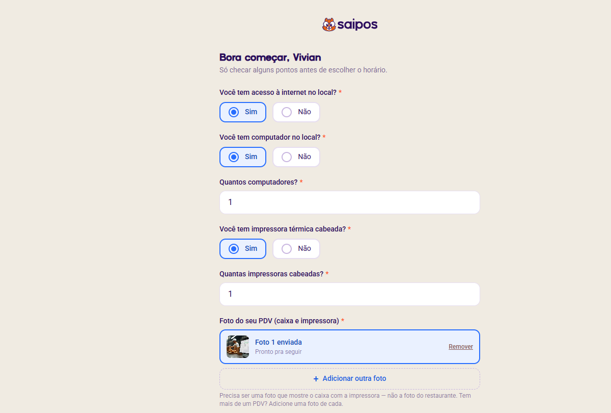
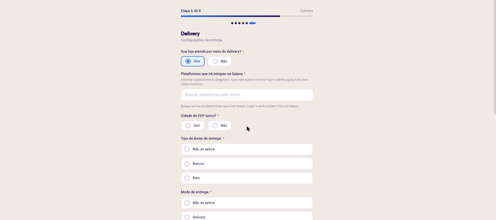

01
Traga seu cardápio
A jornada conecta sua loja e acompanha a importação até o cardápio ficar pronto para revisão.
Cardápio aprovado ✓PDV Light · acesso antecipado
Conecte o cardápio do iFood, receba pedidos e prepare a impressão em uma jornada guiada pela Saipos.
Produto em piloto assistido com restaurantes reais.

Da venda à operação
O PDV Light organiza os primeiros passos para você saber o que fazer, o que já está pronto e o que falta antes de começar a operar.
A jornada conecta sua loja e acompanha a importação até o cardápio ficar pronto para revisão.
Cardápio aprovado ✓Autorize a integração e confirme que os pedidos do iFood estão chegando no mesmo lugar.
Recebimento ativo ✓Instale o Saipos Printer no computador do caixa, escolha a impressora e faça um teste real.
Impresso na mão ✓Um passo de cada vez
Orientações claras, progresso visível e conferências antes da operação. Sem transformar a configuração em um manual técnico.



Feito para o corre real
As declarações e a conexão podem começar antes de você estar no computador do caixa.
A etapa física fica clara: computador, impressora ligada e um teste no papel.
O treinamento acontece com o seu cardápio e a sua operação já visíveis na plataforma.
Em validação
O PDV Light está em piloto assistido. A régua é simples: cada restaurante precisa conseguir concluir o setup com cada vez menos intervenção.
Participar das próximas conversassem precisar acionar o atendimento
Antes de começar
A gente confirma esses itens logo no início para que você avance com clareza.
É onde a plataforma e o Saipos Printer vão operar.
Para receber atualizações e pedidos em tempo real.
Ligada ao computador para concluir o teste de impressão.
Perguntas frequentes
A experiência está em piloto assistido. O acesso depende do perfil da operação e da disponibilidade das próximas rodadas.
Não. Parte da jornada pode acontecer antes. Para instalar e testar a impressora, você precisa estar no computador do caixa com o equipamento ligado.
A jornada foi desenhada para conectar a loja, importar o cardápio e mostrar o resultado para conferência. A disponibilidade depende de uma loja ativa no iFood.
Ainda não. O piloto testa o fluxo guiado em um ambiente acompanhado para identificar onde a experiência precisa melhorar.
Vamos conversar
Conte um pouco sobre o seu restaurante. Esta demonstração simula o primeiro contato com o time Saipos.